3D Printing is not a single technology, instead is a bunch of different tecnhologies and methods for making additive parts out of a CAD file.
The Final Result
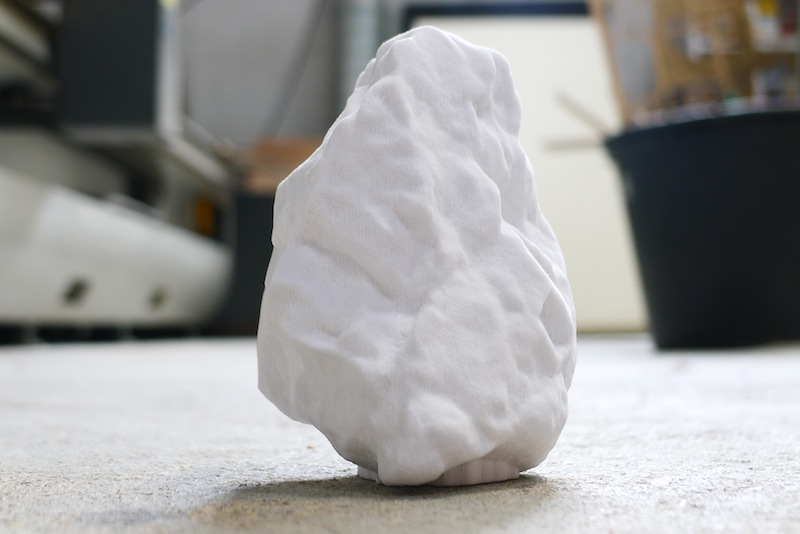The Process
3D Scanning using a Roland LPX-60, post-process using Rhino 3D and 3D Printing on a Z-Corp Spectrum 510.
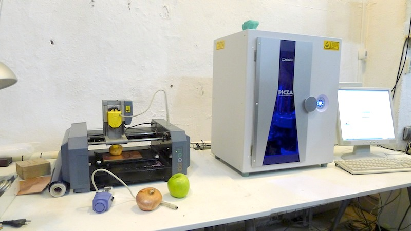 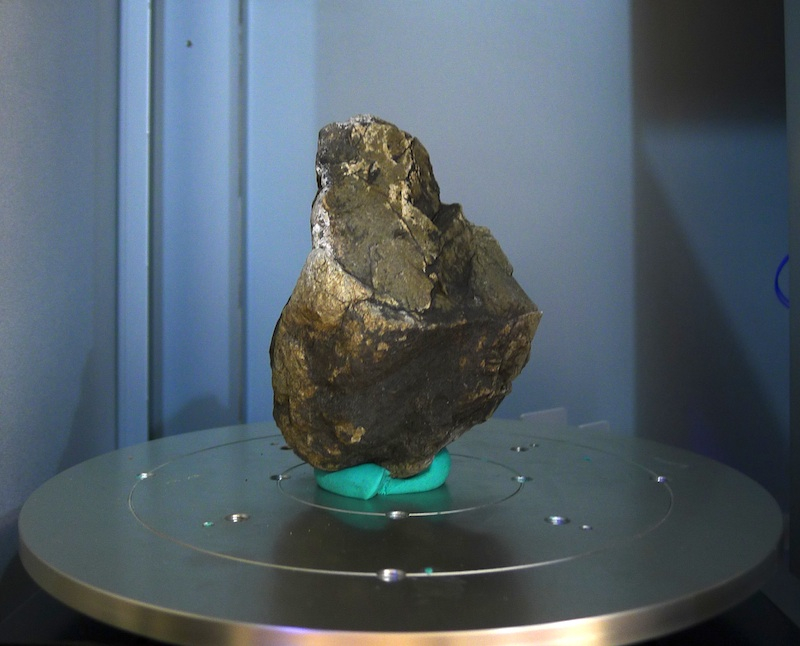 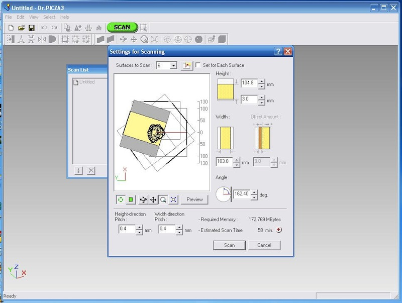 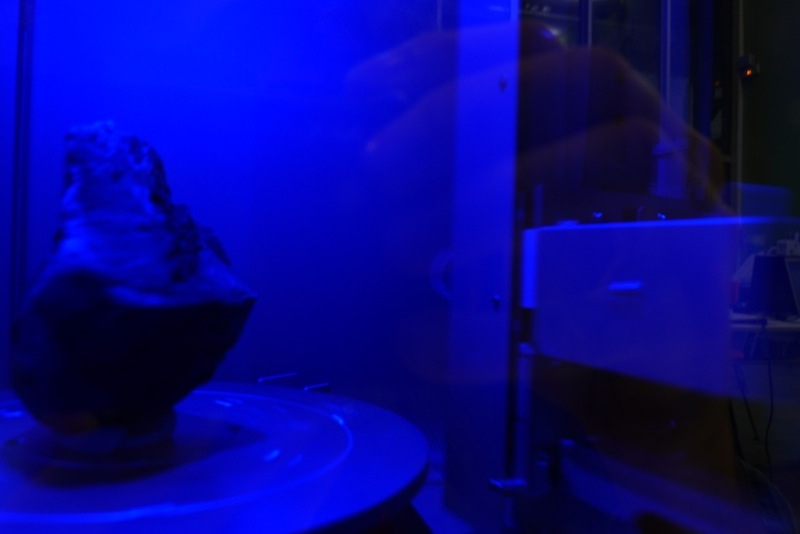 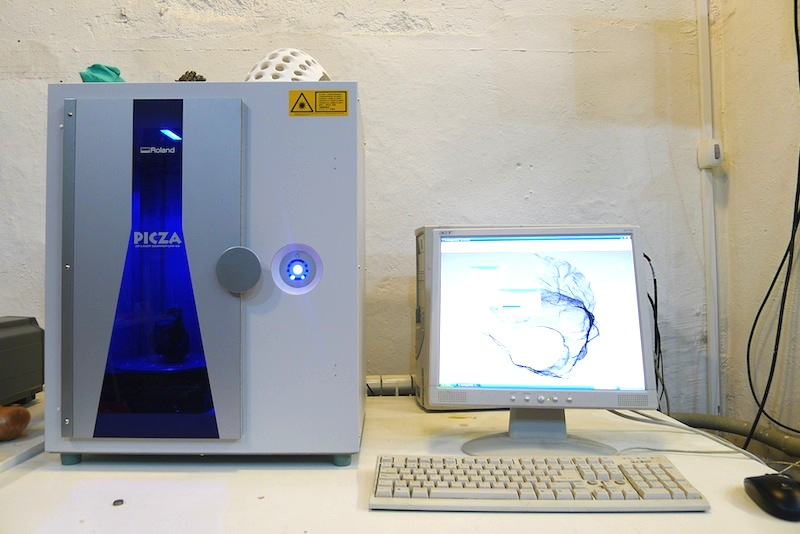 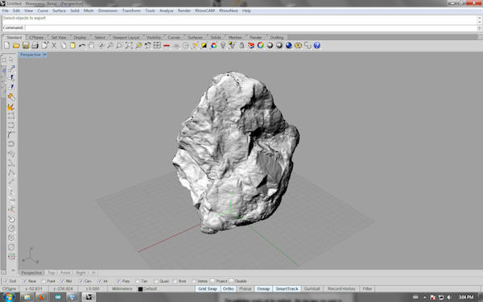 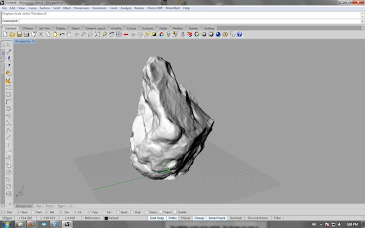 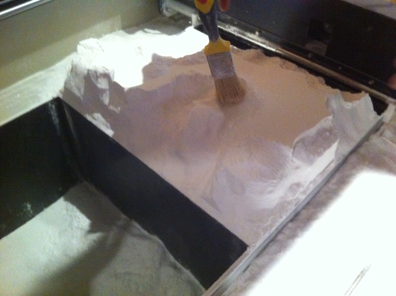 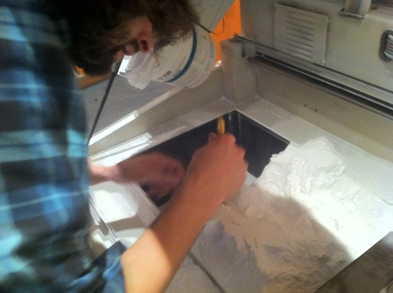 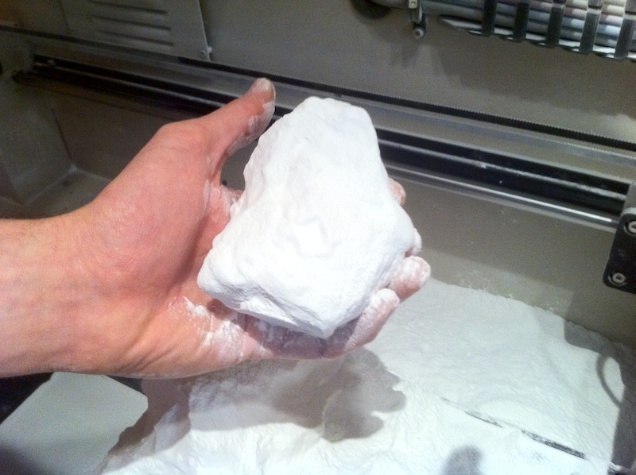 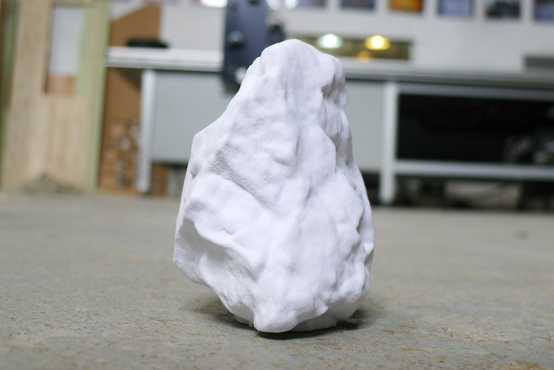 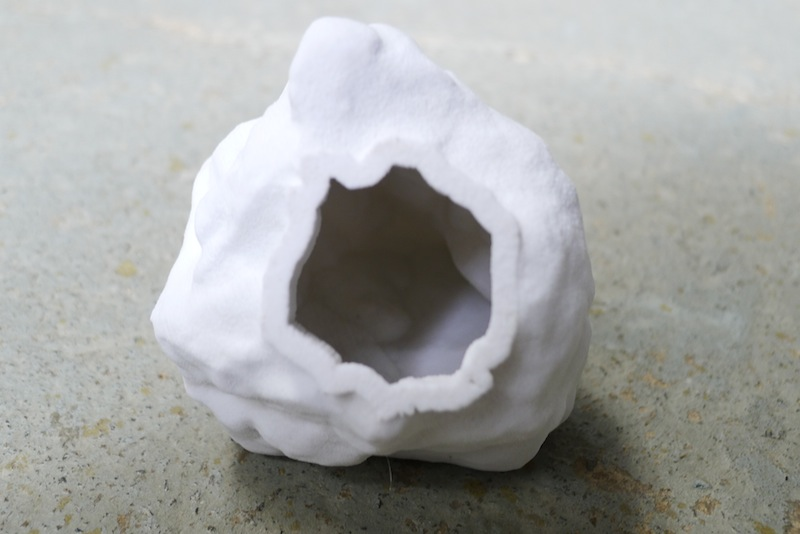